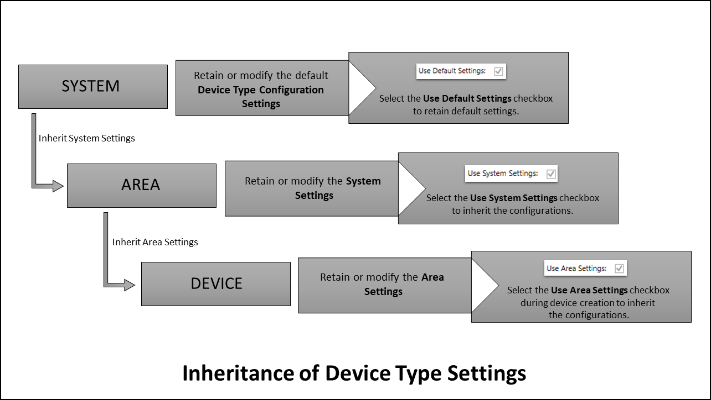
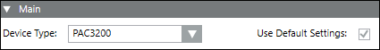
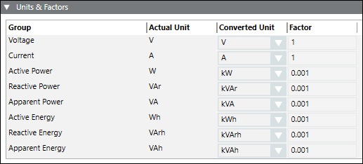
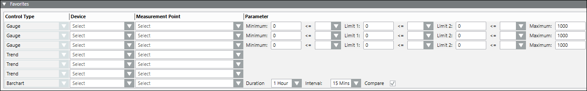
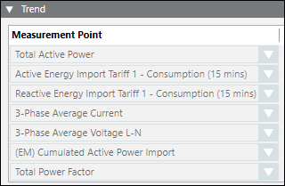

Device Type Configuration Tab
In Engineering mode, you can configure a device type at the system level in the Device Type Configuration tab.
You can also perform the configurations to a specific device type under this tab and inherit these configurations at different levels. The flow of inheritance of the configurations is described in the chart below.

Inheritance from System Level
The configurations made to a specific device type at the system level can be inherited to all the devices of the selected device type in Powermanager as default settings. Perform the configurations to be inherited under the Device Type Configurations tab, when Powermanager is selected in the system tree.
Select the Use System Settings checkbox at the area level to inherit the configurations.
Inheritance from Area Level
The configurations made to a specific device type at the Area level can be inherited to all the devices of the selected device type in Powermanager, as default settings. Perform the configurations to be inherited under the Device Type Configurations tab, in the selected area.
Select the Use Area Settings checkbox during device creation to inherit the configurations.
The following expanders help you in configuring device.
Main Expander
- Device Type: Allows you to select the device to be configured at the system level.
- Use Default Settings: Select this checkbox to use the default device settings for the corresponding device.

Units and Factors Expander
Allows to configure the units and the factors for the measurement points. It has the following columns:
- Group: Displays the device parameters.
- Actual Unit: Displays the default unit of the parameter in the device.
- Converted Unit: Allows you to select the desired unit.
- Factor: Displays the conversion factor used for unit conversion.

Measurement Points Expander
Allows you to configure the measurement point settings in the Powermanager system. It consists of the following columns:
- Group: Displays the category of the measurement point. You can select the measurement point category from the dropdown box.
- Measurement Point: Displays the name of the measurement point. You can select the measurement point from the dropdown box.
- Unit: Displays the unit of the measurement point.
- Poll: Select the checkbox for the measurement point to be polled.
- Display: Select the checkbox for the measurement point to be displayed in the Measurement values tile in the Overview tab in Operating mode.
- Archive: Select the checkbox for the measurements points for which data has to be archived.
- Alarm: Select the checkbox to enable alarms for the corresponding measurement points.
Alarm Configuration Expander
To configure a workstation alarm for a point, you must configure the following fields:
- Alarm kind: Allows you to choose the type of alarm to be activated.
- Reset: Allows you to rest all alarm conditions from the table and reset the default alarm class.
- Alarm Type: The alarm type to be enabled for an event.
- Check Acknowledgement checkbox.
- For Range:
Priority: Low, Medium, High and Fault
Operator:: In range, !.. : Not in range , || : OR, !|| : NOR
Range: The value, or range of values, for which an alarm is to be issued. - For Limit:
Priority: Low, Medium, High and Fault
Check Acknowledgement checkbox.
Operator: : > : Greater than , >= : Greater than or equal to , < : Less than, <= : Less than or equal to
Limit: User defined values
Operator: Allows you to select between the = and None options.
UpperHysteresis: The upper range for the alarm value beyond which alarms will be generate.
Operator: Allows you to select between the = and None options.
Lower Hysteresis: The lower range for the alarm value below which alarms will be generated. - EventText: The text to display when the alarm is issued.
- NormalText: The text to display when the alarm ceases.
- New: Allows to add new rows with default alarm class and values.
- Delete: Allows you to delete the selected alarm row.

Favorites Expander
It allows to configure the following parameters that are displayed in the Favorites tile in Operating mode.
- Control Type: (read only) Displays the modes of representation of the parameters configured. You can display the parameters through three gauges, three trends and one bar chart.
- Device: It allows you to select the devices to be displayed in the Favorites tile in Operating mode with the corresponding representation.
- Measurement Point: It allows you to select the measurement points to be configured for the corresponding device under the Device column.
- Parameter: It allows to set the limits of the gauges and the color for the representing the corresponding measurement point. You can also select the time duration to be used in the bar chart.

Trend Expander
It allows you to configure the parameters for the Trends tile in Operating mode. You can select the measurements points from the Measurement Point column under this expander.
